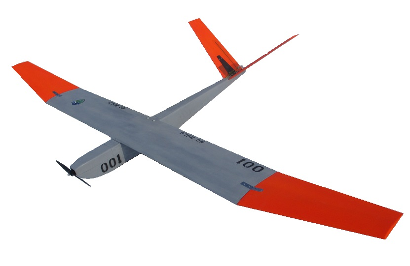
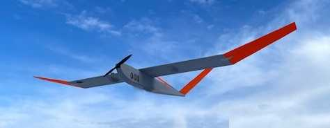

Remotely Piloted Aircraft System
| Endurance | 2 hours |
| Cruise Speed | 25 knots |
| Max Speed | 50 kts |
| Max Ceiling | 10,000 feet |
| Normal Cruise Altitude | 1000 - 5,000 feet |
| Range | 50 nautical miles |
| Takeoff/Landing Speed | 15 knots (STOL-Capable) |
| Max Payload Capacity | 2 lbs total |
| Type | Single Engine, Tractor, V-Tail |
| Engine | Electric Brushless |
| Construction | Modular, Compression Molded Composite |
| Landing Gear | Belly Skid |
| Wingspan | 100" |
| Length | 50" |
| Weight | 9.4 lbs (no payload) / 11.4 lbs (max payload) |


The GT-100HL RPAS is a fixed wing electric unmanned aircraft system designed for operations in austere environments where normal takeoff and landings are not possible. The aircraft incorporates a high lift, low drag airfoil and "all-composite" construction to enable flight operations in confined rural and urban areas.
The low drag airfoil permits speeds in excess of 50 knots, reducing the "base to on-scene" flight time. The aircraft is easily hand-launched with the normal recovery a "belly-land" in very small areas. The aircraft can even be caught inflight for recovery by experienced operators.
The powerplant is an electric outrunner motor. The onboard lithium polymer battery supplies continuous current to enable flight times of up to two hours with a range of approximately 50 nautical miles. On-site assembly, launch, and operation are accomplished with only a single person in less than 30 minutes.
NOTE: The GT-100HL RPAS prototype completed initial flight testing in 2018. Final flight testing of the production aircraft took place during the 1st quarter of 2021 to validate performance specifications. The GT100HL RPAS/UAS is commercially available to the public.